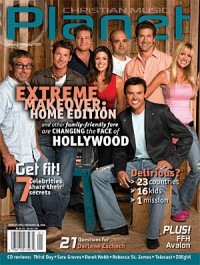

CMnexus
: Contemporary Christian culture, music, and media.
|
|
Christian Music Planet, Jan / Feb 2006, vol. 5, iss. 1
| Cover |
|---|
|  | | Writers in this Issue |
|---|
Argyrakis, Andy
Banister, Christina A.
Barr-Jeffrey, Anthony
Bartlett, Amy
Beron, Deonne
Black, Beau
Dylan, Lucy
Ellis, John
Isaac, Jenni
Kenneth, Lydia
Losey, Steven Douglas
McDonald, Norm
Urbanski, Dave
|
TelevisionCover Feature:Article:21 Things You Always Wanted To Know About...:Listen:
- Rebecca Saint James - If I Had One Chance To Tell You Something by Beau Black
- Sara Groves - Add to the Beauty by Anthony Barr-Jeffrey
- FFH - Voice from Home by Lucy Dylan
- Avalon - Stand by Andy Argyrakis
- Darlene Zschech - Change Your World by Amy Bartlett
- Zoegirl - With All of My Heart: The Greatest Hits by Christina A. Banister
- Telecast - Eternity Is Now by Steven Douglas Losey
- Third Day - Wherever You Are by Dave Urbanski
- Derek Webb - Mockingbird by Norm McDonald
In The Spirit:
- "Brave Promises" by John Ellis
Relevant LinksYou may be able to find Christian Music Planet in a library near you: check Worldcat |
|